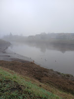
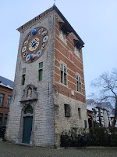

Maandag 11 november 2024
Wandeling Temse
Wegens de Sigmamaatregelen langs de Schelde heb ik tijdens de wandeling het plan volledig moeten aanpassen en werd het een freehiking op het gevoel.
Vertrokken aan de sporthal Temsica in de Gasthuisstraat ging het door de woonwijken naar de markt in Temse en vandaar over de Temsebrug. Aan de voet van de brug vindt je het standbeeld van de heilige Amelberga die volgens de legende op miraculeuze wijze op de rug van een steur Temse binnenvaart.
Over de Temse brug gaat het links via het jaagpad naar Buitenland om dan via een lus langs de Oude Schelde terug te keren naar de Temsebrug.
We steken de Temsebrug opnieuw over langs de rechtse kant en aan de voet gaat het door het Scheldepark richting Steendorp. Hier vindt je het Fort van Steendorp waar je volledig rond kan wandelen.
Het was de bedoeling om door de Roomkouter te gaan, doch hier zijn honden niet zijn toegelaten dus werd het er rond tot op de Kapelstraat.
Via Schauselhoek, Hollebeek en Oostberg terug naar het Scheldepark om even een vieruurtje te nemen in de brasserie Fretalop van het zwembad. Honden toegelaten.
Van hier terug naar de sporthal. Goed voor ongeveer 23 km.
Zondag 17 november 2024
Poeldijk - Hoek van Holland
Voor een capoeira-weekendje naar Nederland. De ring rond Rotterdam blijkt al even erg te zijn als de ring rond Brussel en Antwerpen.
We logeerden 2 nachten in hotel Saint Vincent te Poeldijk. Het hotel was oorspronkelijk een verenigingshuis. Na een korte leegstand werd het een hotel. Veel van de oorspronkelijke charme is bewaard gebleven.
Het toeristisch seizoen zit erop, daarom toch een beetje een zoektocht naar een eetgelegenheid, uiteindelijk zijn we terechtgekomen in eetcafé Zout.

Zaterdag hebben we een korte wandeling van ongeveer 15 km gedaan. De streek is gekend voor de bloementeelt, overal zie je serres.
We zijn toevallig terechtgekomen in een pluktuin waar we ook koffie konden verkrijgen. Verrassend lekkere cappuccino met havermoutdrink.
De streek is geliefd bij ruiters en speciaal voor hen zijn er op hoogte aanvraagknoppen aan de verkeerslichten.

Zaterdagavond zijn we by night gaan eten in het Coast Beach House. Een beetje een avontuur om er te geraken, in het donker door de duinen en met een serieuze windkracht.
Zondag een stevigere wandeling voor Pacco en mij, we hadden 5 uur de tijd. Zolang duurde de workshop Capoeira.
Verrassend veel natuurgebied en strand, zo dicht bij Den Haag. Al snel wordt het duidelijk dat de meeuw het symbool is van de Hoek van Holland.
Maandag 30 december 2024
Lierke Plezierke
Nog eens naar Lier maar nu voor een verlengd weekend.
Dag 1
Inchecken in Hotel Florent, gelegen in het centrum van Lier. Voldoet prima als je maar een paar dagen blijft en overdag veel op pad bent.
Parkeer na het inchecken buiten het centrum als je geen probleem hebt met een kleine wandeling. Parking CC De Mol is gratis en slechts 15 minuten stappen.
's Avonds gaan eten in Het Moment op de markt in Lier. Ze maken echt werk van de kerstversiering!
Tijdens de eindejaarsperiode kan je even binnenkijken in de herberg “Het Zeemeerminneke”. Deze herberg komt voor in de novelle Driekoningentriptiek van Felix Timmermans,
waarin drie volksfiguren zich verkleden als Drie Koningen om geld in te zamelen, verdwalen en uiteindelijk hun geld schenken aan de arme bewoners van een woonwagen.
Dag 2
Vandaag een wandeling over het water, richting het Fort van Lier. Bij vertrek lag de Nete nog goed bedekt onder de mist.

Houd er rekening mee dat in Lier de natuur een grote rol speelt. Na langdurige regen is goed schoeisel essentieel.
De gracht rond het Fort van Lier was lichtjes buiten de oevers getreden, waardoor slechts een smalle strook begaanbaar bleef.
Via de Molse Poort kom je Lier opnieuw binnen en zie je meteen het opvallende kunstwerk op de rotonde:
de twee figuren stellen Pallieter en Marieke voor, uit de roman Pallieter van Felix Timmermans.
Het bekendste monument van Lier is de Zimmertoren, voorheen de Corneliustoren.
De toren kreeg zijn naam nadat de jubelklok en de astronomische studio, beide ontworpen door uurwerkmaker Louis Zimmer, erin werden ondergebracht.

Op het Zimmerplein vind je ook de Gevangenpoort. Loop door deze poort, sla na de eerste straat links af en je vindt café Het Belofte Land.
Hier eet je de allerlekkerste spaghetti van Lier. Reserveren is een aanrader!
Tip: Als je buiten het centrum wil wandelen, check vooraf een (online) kaart om zeker te zijn dat je tijdig het water weer over kan.
Dag 3: Broechem (10 km van Lier)
Je kan gratis parkeren aan de sporthal Het Loo. De wandeling ging vanuit Broechem naar Ranst door het Zevenbergenbos met het prachtige Kasteel Zevenbergen en de Mariagrot.
De grot werd opgericht door Gaston de Gilman de Zevenbergen, de laatste afstammeling van de familie.
Vanuit Ranst richting Oelegem met het Fort en het provinciaal domein Vrieselhof, met het prachtig gerestaureerde kasteel.
Nog een aanrader om te gaan eten: De Barak.